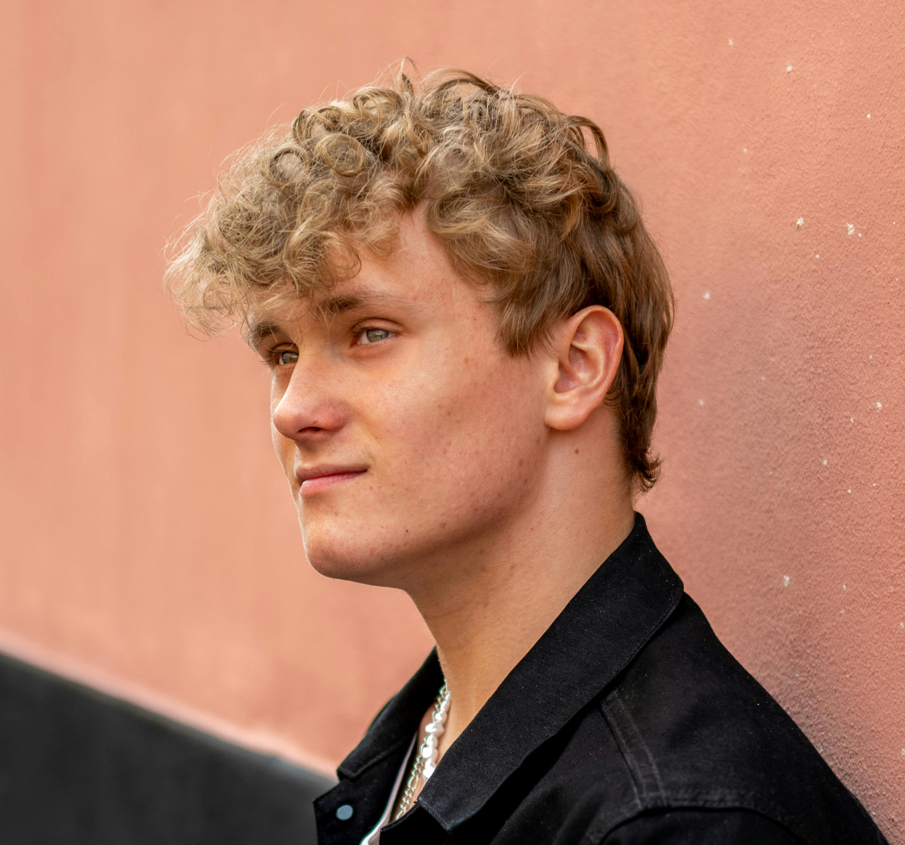

Sofie, 24 år
"Det har været en fantastisk oplevelse. Fællesskabet er stærkt, og jeg føler mig altid velkommen. Det kan klart anbefales!"
At starte som frivillig er en stor ting. Men hos SIND følges vi ad sammen. Hele vejen igennem.
Du møder andre unge, får en rolig introduktion og kan prøve aktiviteter af i dit eget tempo.
Her handler det om relationer, nærvær og et fællesskab, hvor alle er velkomne.
At være frivillig hos SIND handler ikke kun om at hjælpe andre. Det handler også om fællesskab, oplevelser og mennesker.
Mange af vores frivillige fortæller, at de:
• Føler sig godt taget imod fra første dag
• Hurtigt lærer de andre frivillige at kende
• Får oplevelser og erfaringer, de tager med videre med sig ud i livet
Du behøver ikke have erfaring på forhånd. Vi hjælper dig i gang - og du står aldrig alene.
Vi har spurgt nogle af vores unge frivillige om deres oplevelser af deres opstart:
"Det har været en fantastisk oplevelse. Fællesskabet er stærkt, og jeg føler mig altid velkommen. Det kan klart anbefales!"

"Trygheden og fleksibiliteten gør, at jeg kan være med på mine egne præmisser. Det betyder alt for mig i hverdagen."
Som frivillig hos SIND, kan du både være besøgsven, bisidder, telefonrådgiver eller være med i bestyrelsen.
Hvis du er i tvivl om hvad din rolle kunne blive, så tag quizzen herunder!